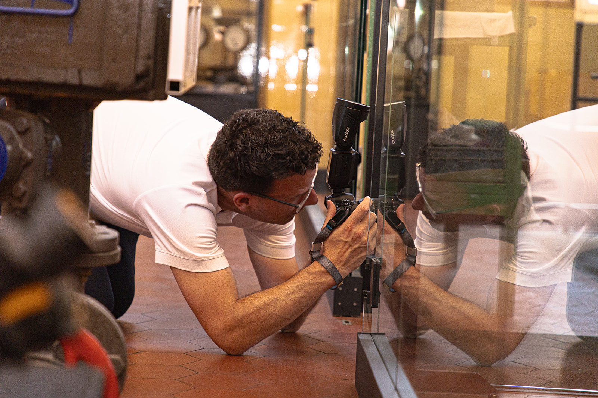
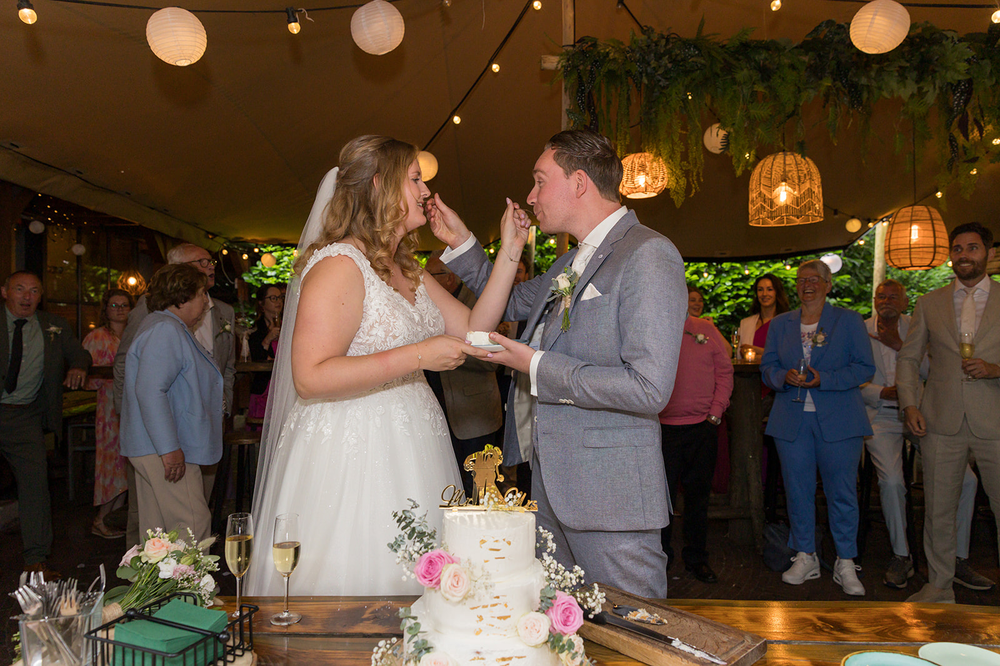
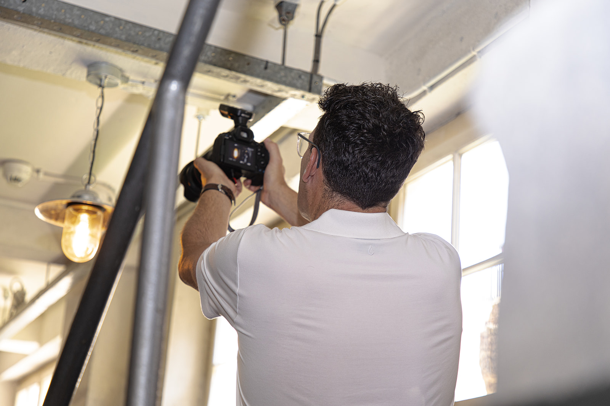
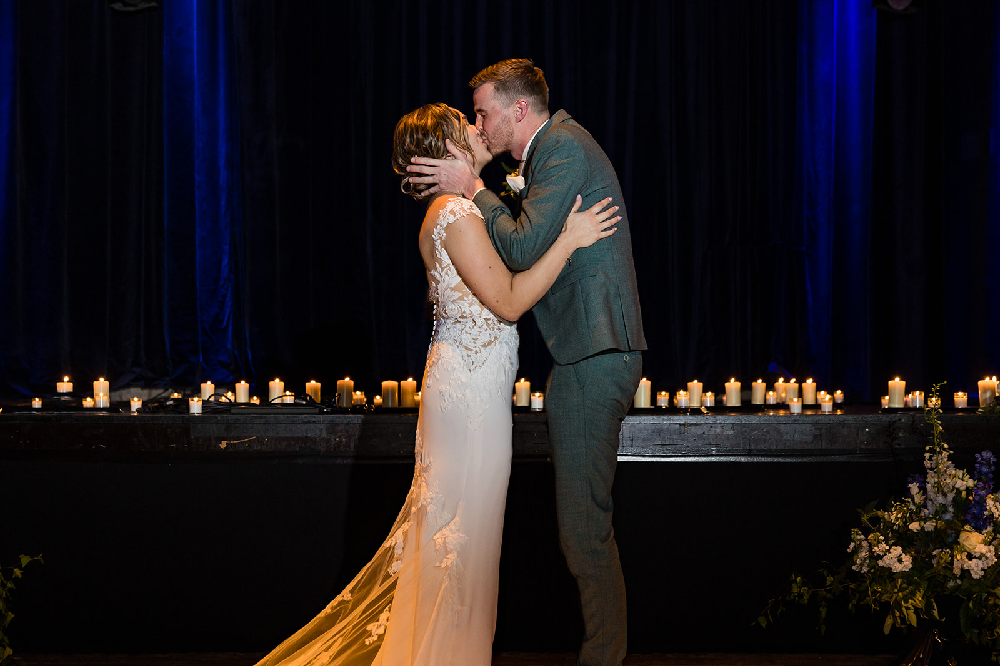
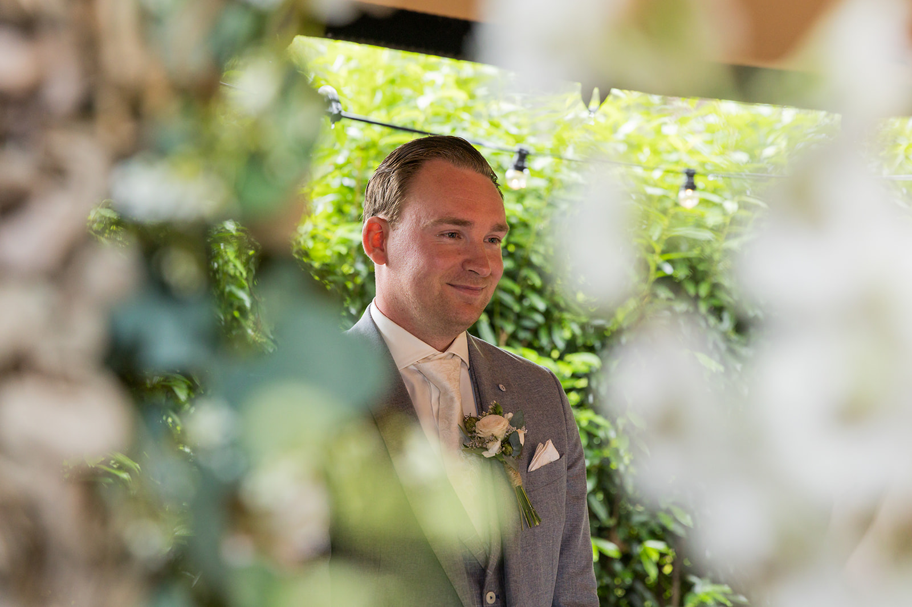
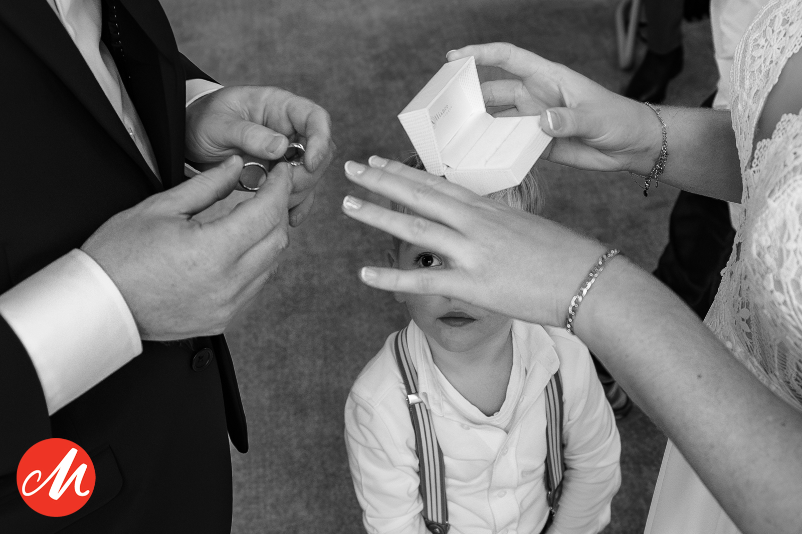
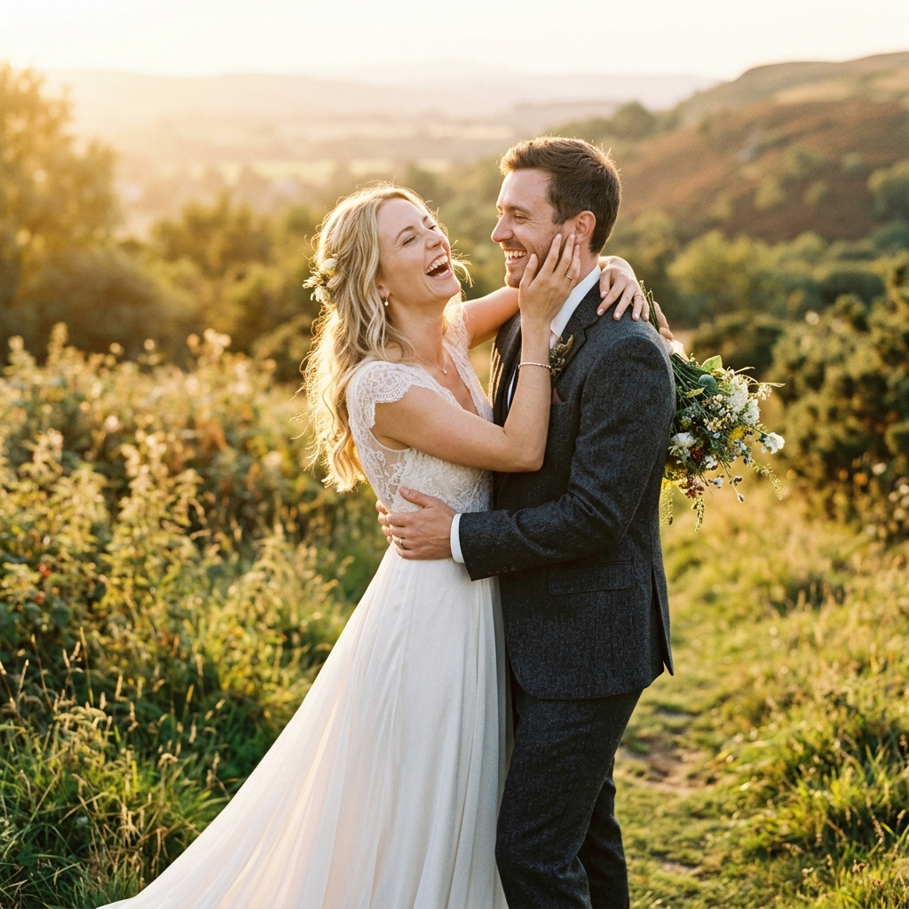

Hoe ik werk
Ik beweeg rustig met jullie mee en geef momenten de ruimte. Soms zit ik laag bij de grond en wacht ik geduldig tot er iets moois gebeurt. Zo kan ik dichtbij zijn zonder de dag naar mijn hand te zetten.

“Wanneer ik de mooie momenten in het leven mag vastleggen voor iemand, ben ik op mijn best”
Hoi, ik ben Mark. Trouwfotograaf uit Moergestel, getrouwd met Mariska en trotse vader van Beau. Ik hou van gezelligheid, echte mensen, slechte grappen en bruiloften waarop niet alles volgens een strak draaiboek hoeft te verlopen.

Ongedwongen trouwfotografie vol echte emoties, gezelligheid en de nodige humor.
Op jullie trouwdag hoeven jullie niet na te denken over hoe je moet staan, waar je moet kijken of of alles wel goed op de foto komt. Daar zorg ik voor.
wij leggen jullie dag vast zoals hij echt gebeurt: van de grote momenten tot de kleine blikken, tranen, knuffels en onverwachte lachbuien tussendoor. En voelt het voor de camera even wat ongemakkelijk? Geen probleem. Met duidelijke aanwijzingen en een beetje humor praten we jullie daar vanzelf doorheen.
Zo krijgen jullie geen verzameling gemaakte plaatjes, maar foto’s die laten zien wie jullie zijn en die jullie steeds weer terugbrengen naar hoe de dag écht voelde.
Jullie trouwdag draait om jullie en om de mensen van wie jullie houden. Het enige wat jullie die dag hoeven te doen, is genieten.
Ik beweeg mij ontspannen tussen jullie gasten en kleed me netjes, alsof ik zelf een daggast ben. Daardoor val ik niet onnodig op, voelen mensen zich sneller op hun gemak en merken jullie vaak nauwelijks dat ik aan het fotograferen ben.
Ondertussen houd ik mijn ogen open voor alles wat er gebeurt. De zenuwen tijdens het aankleden, een trotse blik van een ouder, een onverwachte traan en vrienden die helemaal losgaan op de dansvloer.
Natuurlijk kan ik niet letterlijk overal tegelijk zijn. Daarom bespreken we vooraf rustig hoe jullie dag eruitziet en welke mensen en momenten voor jullie belangrijk zijn. Wanneer jullie op verschillende locaties worden voorbereid of er veel gelijktijdig gebeurt, kunnen jullie ook kiezen voor een tweede fotograaf.
Tijdens onze kennismaking leg ik ontspannen uit wat de mogelijkheden zijn. Daarna bepalen we samen welk pakket en welke invulling het beste bij jullie bruiloft passen. Zonder verkooppraatjes of druk: het moet vooral goed voelen en aansluiten bij wat jullie nodig hebben.


Bijna ieder bruidspaar vertelt ons:
“Wij zijn helemaal niet fotogeniek.”
Gelukkig hoeft dat ook helemaal niet.
Jullie hoeven niet te weten hoe je moet staan of wat je met je handen moet doen. Ik help jullie, geef aanwijzingen waar nodig en zorg ervoor dat het niet te serieus wordt.
Soms hoort een iets meer geposeerde foto erbij. Maar ook daar praten en lachen we jullie doorheen. Het belangrijkste is niet dat jullie perfect poseren, maar dat jullie jezelf herkennen wanneer jullie later naar de foto’s kijken.
Natuurlijk fotografeer ik de kus, de ringen, de ceremonie en de groepsfoto’s. Maar een trouwdag bestaat uit veel meer dan alleen de momenten die op de planning staan.
Ik zoek ook naar wat er tussendoor gebeurt: een vader die het even moeilijk heeft, een kind dat ondeugend om het hoekje kijkt, oma die geniet op de dansvloer of vrienden die samen dubbel liggen van het lachen.
Misschien krijgen jullie zo’n moment op de dag zelf helemaal niet mee. In jullie trouwreportage kunnen jullie het later alsnog ontdekken.
Zo ontvangen jullie niet alleen mooie foto’s, maar het complete verhaal van jullie trouwdag.

Jullie trouwfotograaf is een groot deel van de dag dichtbij. Daarom moet niet alleen het fotografiewerk aanspreken, maar moet het persoonlijk ook klikken.
Tijdens een vrijblijvende kennismaking hoor ik graag wie jullie zijn en wat jullie plannen voor de trouwdag zijn. We bespreken jullie wensen, bekijken mijn albums en nemen rustig de verschillende mogelijkheden door.
Daarbij leg ik ook uit welk pakket bij jullie dag past en of een tweede fotograaf voor jullie echt iets toevoegt. Jullie hoeven tijdens het gesprek nergens direct over te beslissen.
Zijn jullie benieuwd of jullie trouwdatum nog beschikbaar is? Stuur mij dan vrijblijvend een bericht. Ik hoor graag wat jullie plannen zijn.
Plan een kennismaking
Elke bruiloft is uniek. Reportages zijn beschikbaar vanaf 6 uur aanwezigheid inclusief een zorgvuldige nabewerking en een persoonlijke online galerij.
Vraag een vrijblijvende offerte aanDeze algemene voorwaarden zijn van toepassing op alle offertes, overeenkomsten en diensten van Mark van Dis Trouwfotografie (KvK 84968915), gevestigd aan de Burgemeester Poortstraat 17, 5066 GE te Moergestel.
2.1 Deze algemene voorwaarden zijn van toepassing op alle diensten en producten geleverd door de fotograaf, tenzij schriftelijk anders overeengekomen.
2.2 Afwijkingen van deze voorwaarden zijn alleen geldig als ze schriftelijk zijn overeengekomen.
2.3 Bij het boeken van een reportage gaat de opdrachtgever akkoord met deze algemene voorwaarden.
3.1 Een boeking is pas definitief na ondertekening van de offerte en betaling van de aanbetaling.
3.2 De volledige kosten van de fotografieopdracht dienen uiterlijk één week voor de bruiloft volledig te zijn betaald.
3.3 Indien de betaling niet tijdig is voldaan, behoudt de fotograaf zich het recht voor om de opdracht te annuleren.
4.1 De fotograaf streeft ernaar de foto’s binnen 6 weken na de bruiloft te leveren.
4.2 De exacte levertijd kan variëren, afhankelijk van het seizoen en de drukte.
4.3 Overschrijding van de leveringstermijn geeft geen recht op schadevergoeding of annulering van de opdracht.
5.1 Alle auteursrechten op het beeldmateriaal blijven eigendom van de fotograaf.
5.2 De opdrachtgever krijgt een licentie om de foto’s voor persoonlijke doeleinden te gebruiken, zoals afdrukken en delen op sociale media.
5.3 Commercieel gebruik door de opdrachtgever is alleen toegestaan na schriftelijke toestemming van de fotograaf.
6.1 De fotograaf behoudt het recht om beeldmateriaal te gebruiken voor promotionele doeleinden, zoals de website, social media, portfolio en drukwerk.
6.2 De fotograaf heeft het recht om foto’s in te sturen voor fotowedstrijden en awards.
6.3 Indien de opdrachtgever niet wenst dat de beelden voor promotie of wedstrijden worden gebruikt, dient dit vooraf schriftelijk te worden overeengekomen.
7.1 Bij annulering door de opdrachtgever gelden de volgende voorwaarden:
• Tot 3 maanden voor de bruiloft: 50% van het totaalbedrag wordt in rekening gebracht.
• Binnen 3 maanden voor de bruiloft: 100% van het totaalbedrag wordt in rekening gebracht.
7.2 In geval van ziekte of overmacht zal de fotograaf zich inspannen om een vervangende fotograaf te regelen. Indien dit niet lukt, wordt het volledige betaalde bedrag gerestitueerd.
7.3 Overmacht omvat onder andere ziekte, ongeval, extreme weersomstandigheden, natuurrampen of andere onvoorziene omstandigheden buiten de invloed van de fotograaf.
8.1 De fotograaf is niet aansprakelijk voor schade die voortvloeit uit het gebruik van het beeldmateriaal door de opdrachtgever of derden.
8.2 In geval van technische problemen, zoals defecte apparatuur of dataverlies, zal de fotograaf zich inspannen om een passende oplossing te bieden.
8.3 De fotograaf is niet aansprakelijk voor schade of letsel ontstaan tijdens de fotoshoot of bruiloft.
9.1 Klachten over de geleverde diensten of producten dienen binnen 7 dagen na levering schriftelijk te worden ingediend.
9.2 De fotograaf zal binnen 14 dagen reageren op de klacht en indien nodig een passende oplossing bieden.
10.1 Tijdens de bruiloft worden naast de opdrachtgever ook gasten gefotografeerd. De opdrachtgever informeert de gasten hierover en zorgt ervoor dat zij hiermee akkoord gaan.
10.2 De fotograaf gaat zorgvuldig om met persoonsgegevens en beeldmateriaal, conform de Algemene Verordening Gegevensbescherming (AVG).
10.3 Indien een gast bezwaar maakt tegen publicatie van een foto, zal de fotograaf deze desgevraagd verwijderen.
11.1 Indien de fotograaf gebruikmaakt van een drone, zal dit altijd conform de Nederlandse wetgeving gebeuren.
11.2 De fotograaf is niet verantwoordelijk voor wijzigingen in wet- en regelgeving die het gebruik van een drone op de trouwlocatie verhinderen.
11.3 De opdrachtgever dient zelf na te gaan of er op de trouwlocatie beperkingen gelden voor het gebruik van drones.
12.1 Reiskosten binnen Nederland zijn inbegrepen in de prijs.
12.2 Voor buitenlandse bruiloften worden reis- en verblijfskosten volledig door de opdrachtgever vergoed.
13.1 Indien de opdrachtgever wijzigingen in de opdracht wenst, dient dit zo spoedig mogelijk te worden doorgegeven.
13.2 Extra werkzaamheden die voortvloeien uit wijzigingen worden in rekening gebracht op basis van een meerwerkfactuur.
14.1 De fotograaf bewaart de digitale bestanden minimaal 12 maanden na de trouwdag.
14.2 Na deze periode is de fotograaf niet verplicht de bestanden langer te bewaren.
14.3 Het opnieuw leveren van bestanden na de bewaartermijn kan extra kosten met zich meebrengen.
15.1 Op alle rechtsbetrekkingen waarbij de fotograaf partij is, is het Nederlands recht van toepassing.
15.2 Geschillen zullen worden voorgelegd aan de bevoegde rechter in de vestigingsplaats van de fotograaf.